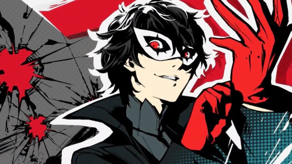

Í <Persona 5> Spilar þú sem unlinga strákur sem upgötar annan heim þar sem sérst í ego fólks í staðin fyrir útlitið þeirra.
aðal persúnur í leikin hafa öll sinn eigin personu sem kemur fram í hinn heimin og getur slást við ego manna
aðal hvötun aðal persónur eru að finna og breyta hjörtu íllmenni

Saga leiksins fer þannig að aðalpersónan sem er dökkherður unlingur með gleraugu er hentur út úr heimili hans fyrir eitthvað sem hann gerði ekki
Eftir það er hann sentur ti annan skóla og þarf að búa á efri hæð kaffistofu. það er ekkert þarna uppi nema drasl og kóngulóavefar
hann þarf að sanna sig með því að fara í gegnum ár í skóla og hjálpa með kaffistöfuna
á fyrsta degi skólans hittir tvær af hinnu aðalpersónur, einn af þeim er annar unlinga strákur með skært gult hár í mohawk og unlinga stelpu með sítt silvur hár
eftir að tala stutta stund með þeim kemur íþrótta kennari upp að þeim í bílin hans og tekur stelpuna með sér upp að skólan.
höfundar Leiksins heita atlus og einn aðal maðurin í hönnun Persona er Katsura Hashino sem hefur unnið áður á slatta af Persona leikina meðal annars, hann hefur sagt að þetta verði síðasti Persona leikurin vegna þess að honum finnst sagan vera bundin niður meðþví að vera á einhverjum hátt alvöru. hann vill frekar núna gera fantysía leiki og þannig geafa fólk nýtt útsín á raunveruleikan.
Notendur leiksins voru fyrt flestir unlinga strákar frá japan
útaf því halda sá sem klára hann eru betri enn aðrir aðþví þeir hafa meiri reynslu og líka í "alvöruni" við leikin
Persona 5 er í raun "shin megami tensei" fyrir alla, miklu léttara að spila og skila leikin
þróun leiksins er meiri enn flestir PvE leikir enda hefur Persona5 leikurin verið útgefin þrisvar sinnum
Fyrst með Persona5 á Playstation3 September 15, 2016 svo á Pc og Nintendo switch á sama tíman og síðan stærsta endurgerð leiksins
Það var leikurin Persona5 Royal. sem er einn dýrasta endurnýing leiks sem hefur verið gerð með hundrað dollara verð við útgáfu.
Hvað var nýtt? Einn auka charecter, eitt auka borð og uppfært bardaga. enn þá hlýtur fyrsti leikurin að vera nálægt hundrað dollar verðið?
Upprunulega útgafa leiksins kom þrem árum fyrir Royal og var orðin frýr stutt fyir útgáfu Royal. maður mydni halda að þau töppuðu penning með því.
enn það var bara ekki hægt að kaupa royal sem dlc og spara af verðinu, í staðin þyrfti maður í raun að kaupa hann upp á nýtt
enn þrátt fyrir verri hluta höfund leiksins hafa þau gert marga góða hluti frá alla fimm persona leikina til shin megami tensei leikina
nú hefur komið út nýrr leikur hjá höfunda Persona 5 með shin megami tensei V og Persona 5 strikers
fyrri hef ég heyrt góða hluti um og að hann sé ein beista útgáfan af tegund leiksins
enn sú fyrri er í stuttu máli ódýr endurnýing heimsbyggingu af Persona 5
þau taka allt uppáhalds charectera þínna sem þau hafa byggt upp og nota þeim tils að selja tóma leikin
það sem maður gerir í Persona 5 strikers er að þú berjir óteljanlega og óþekkjanlega óvinni
sem betur fer slepptu flestir að kaupa hann.
Persona 5 er með hvað kallast Turn based combat og það virkar á þeim hátti að þú ert með lið á móti lið(oftast fjórir á mótti fjórum)
reglunar í því eru sú að þú velur fyrirfram hvað liðið þitt ætlar að gera t.d. einn ætlar að vernda sig enn hinnir árása og þá eftir hraða eða agility charectera gera þau hvað þeim var sagt
þessi leikja gerð er mjög fræg í japan enn er sjaldan gerð vel, það er til forrit sem heitir rpg maker sem hjálpar manni að gera þetta mjög einfaldlega enn ekki jafn skemtilegt og frægir leikir einsvog persona
oftast eru það bara berstu leikirnir sem er sett merstu áherslu á slagsmálonum sem verða fræg og að geta séð hversu mikið höfundar reyndu fer lángar leiðir.
©Ingvi Sigurðarson